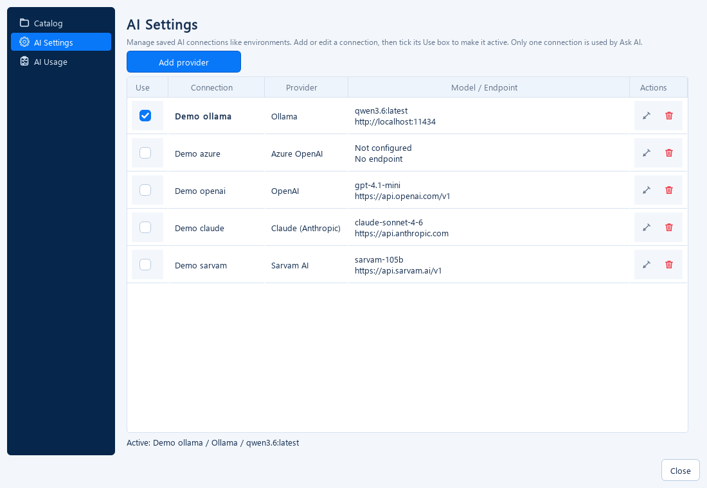
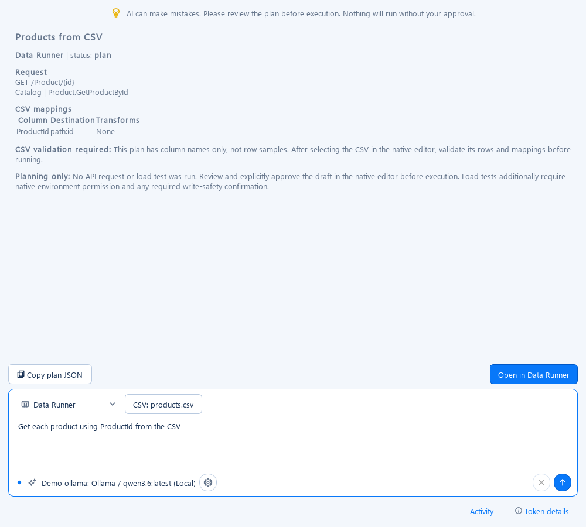
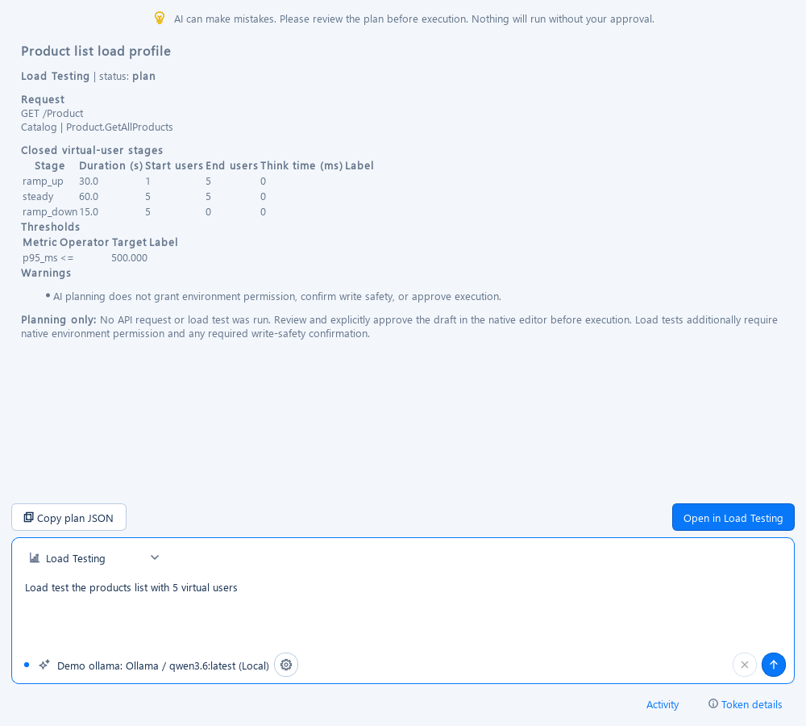
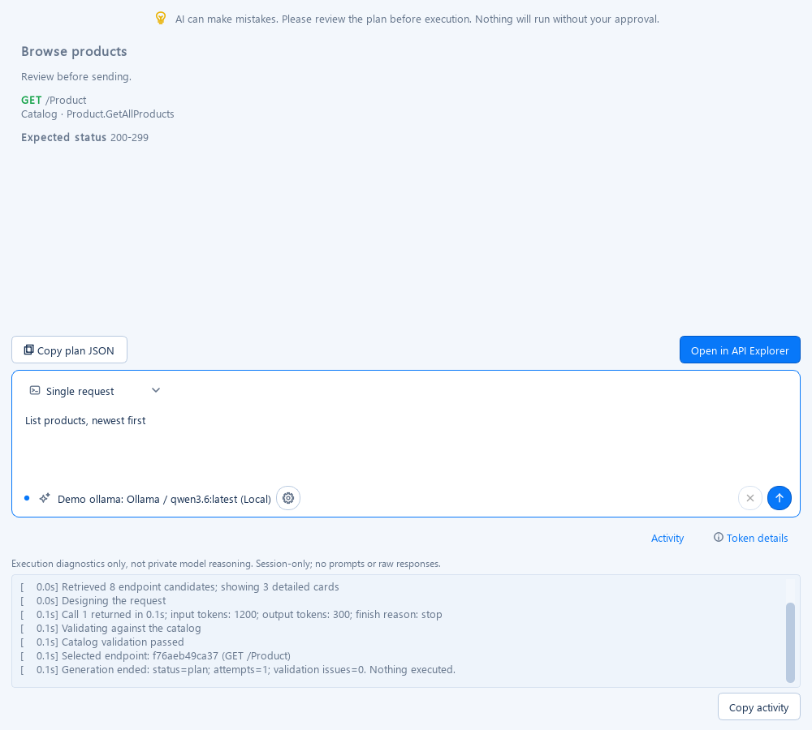
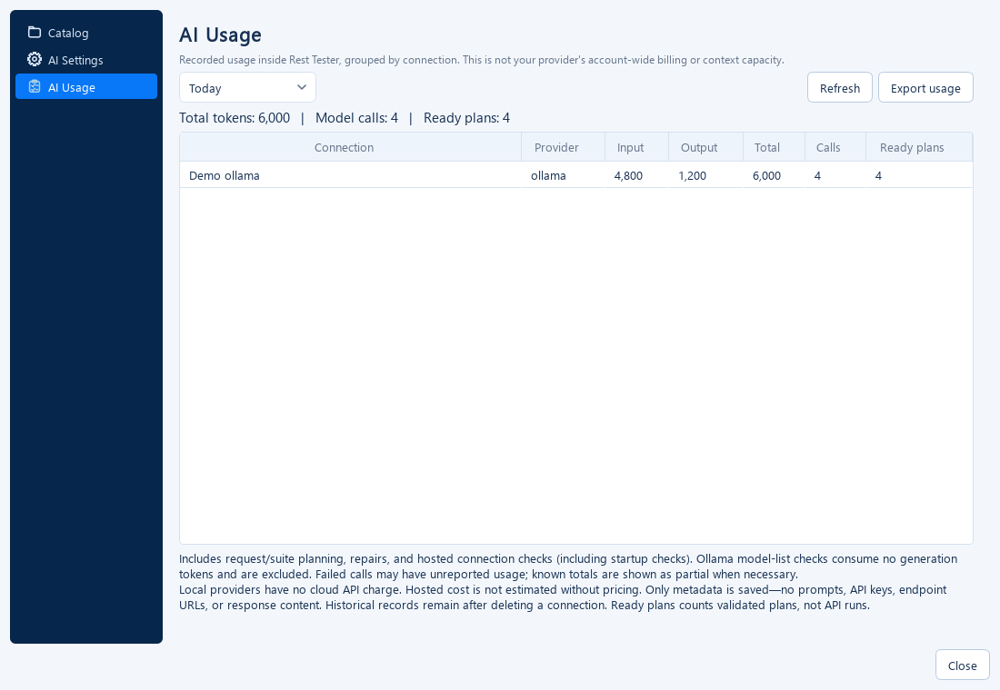

A drafter, not a driver
Think of the catalog as a restaurant menu, AI as the person helping you choose an order, and the native runner as the kitchen. The assistant can draft an order using known options. It cannot decide that you have approved placing it.
Generate → validate → review → open a draft → explicitly Send or Run. A ready plan means the draft passed validation, not that the endpoint works or a test has passed.
All screenshots on this page are captures of the current application with the bundled demo Store catalog and scripted offline responses. Token counts and plans are illustrative; no provider or test API was called to produce them.

Set up a connection
- Open Settings → AI Settings. Add a named connection so you can keep local and hosted profiles side by side.
- Choose the provider, endpoint and model (an Azure deployment name for Azure OpenAI). For hosted profiles, explicitly enable hosted AI and configure the credential.
- Use Test connection, then tick Use to choose the active connection. Only one profile is active at a time.
- Press the header sparkles icon or Ctrl+K. If the connection is unavailable, this opens AI Settings first.
| Provider | Setup | Test connection policy |
|---|---|---|
| Ollama | Local endpoint, model installed in Ollama; default endpoint http://localhost:11434. | Reads /api/tags; no model generation. A listed model does not guarantee a complex plan will succeed. |
| Azure OpenAI | Azure endpoint, deployment name, API version and key. | Small generated answer, ceiling 4,096 output tokens, timeout at least 60 seconds. |
| OpenAI | Compatible endpoint, supported model and API key. | Same 4,096-token / 60-second probe policy. |
| Claude | Anthropic Messages endpoint, model and API key. | Same ceiling / timeout; does not universally disable thinking because model requirements vary. |
| Sarvam AI | Sarvam endpoint, model such as sarvam-105b, and API key. | Reasoning disabled, 128 output tokens, timeout at least 30 seconds. |
Hosted probes are model calls and may be billed, including startup checks. These ceilings are application policies, not guaranteed consumption. OpenAI/Azure/Claude probes omit temperature and do not guess a universal reasoning mode. API/model compatibility still matters.
For local Ollama, install and run it separately, pull the model configured in your profile, then test the connection. The application does not install models for you.

Know the composer
- Test selector: Single request, Test Suite, Data Runner or Load Testing. Modes without a native handoff are disabled.
- Provider/model: a read-only single-line label; long names elide, with the full name in the tooltip. Use the adjacent gear to change settings.
- Connection dot: availability status, not proof of a completed generation. The header activity animation runs during Ask AI generation, not a Settings probe.
- Generate: the arrow or Ctrl+Enter. Cancel cooperatively stops further processing; an in-flight non-streaming HTTP call may finish and still incur usage.
- Copy / Open: copy the plan JSON or transfer a valid draft to its native workspace. Review the warning and the plan first.
Single request
Example for the demo catalog: “List active products, five per page, most expensive first.” For your service catalog, name the actual resource and fields.
The planner selects an endpoint ID, fills parameters, filter fields and operators, sort direction, payload and expected status. Validation checks these against the catalog, including enum choices and RFC 6902 JSON Patch shapes.
- Select Single request and describe the request.
- Review the endpoint, encoded query, payload, assumptions and warnings.
- Choose Open in API Explorer, review environment and authentication, then click Send when ready.
No endpoint is sent during planning. A schema-valid body may still fail business rules or reference data requirements when executed.
Test Suite
Example: “Create a product, capture its ID, read it back, rename it, delete it, and confirm it is gone.” The suite draft can include assertions, captures, dependencies and cleanup cases.
Opening the result in Test Suites offers the native replacement/append workflow. The native runner resolves request variables, orders dependencies, checks assertions and handles cleanup only after you run the suite.
Assertion values are literal. {{productId}} can be used in request parameters and payloads, but is not substituted in assertion values. The validator requests a correction instead. Use a literal expectation or an appropriate existence/type check.
Repeated cases may target the same endpoint. Refinement includes its detailed catalog card once, keyed by endpoint ID; endpoint payload dictionaries are not used as hash keys.

Data Runner
- Select Data Runner and Choose CSV.
- Describe how columns map to the request, for example “Get each product using ProductId as the ID.”
- Review mappings, transforms and the base request.
- Choose Open in Data Runner, confirm draft replacement, validate the actual rows in the native wizard, then explicitly Run.
Only CSV column names are supplied to AI, not row values or the local file path. Current headers are checked again before handoff. A mapped required path field can remain empty in the base request; the row mapper supplies it later.
AI mappings cannot author credentials, header values or arbitrary filesystem paths. Native row validation is still required; a correct header mapping is not proof that every row contains valid data.

Load Testing
Example: “Load test the products list: ramp from 1 to 5 users over 30 seconds, hold for 60 seconds, then ramp down; P95 below 500 ms.”
The draft supports one catalog endpoint and the closed virtual-user model, with warm-up, ramp-up, steady and ramp-down stages, think time and supported thresholds. Open arrival-rate workloads and multiple targets are not supported.
Review the scenario and choose Open in Load Testing. Environment permission, write-endpoint consent and execution approval are cleared. Review safety limits and build the native summary before starting.
error_rate thresholds use fractions: 0.01 means 1%. Stage SLA participation uses native defaults; explicit overrides are rejected during both parsing and draft revalidation. Numeric bounds are representational limits, not safe recommendations for a production API.

How a prompt becomes a draft
- Local retrieval: deterministic lexical/fuzzy catalog search finds likely endpoints. There is no embeddings service or vector database.
- Context cards: compact summaries and selected detailed cards describe fields, parameters, schemas and valid choices. Suite retrieval expands related resource endpoints.
- Structured model call: the provider adapter requests a JSON plan constrained to the offered endpoint IDs.
- Validation: the app checks endpoint existence, fields, operators, values, body shape and workflow-specific restrictions.
- Repair/refinement: ordinary invalid output gets a bounded corrective prompt; endpoints used without a detailed card receive one for review.
- Handoff: only a validated draft enables Open. The native workspace remains the execution authority.
Default request retrieval offers eight candidates and three detailed cards. Suite planning may offer up to 24 candidates and ten cards. This reduces prompt size but does not guarantee the best endpoint or complete business context.
Privacy and execution boundaries
Ollama normally runs locally; a remote Ollama endpoint still receives the prompt. Hosted profiles send the sanitized prompt and selected catalog context to the configured provider only after hosted AI is enabled.
- Known credentials and recognizable bearer/JWT/key patterns are redacted from outgoing messages and diagnostics. Redaction is best effort, not a complete data-loss-prevention system: do not paste secrets or confidential row values.
- CSV rows and local paths are not part of Data Runner AI context.
- The persistent AI usage ledger stores metadata, not prompts, keys, endpoint URLs or raw model replies.
- Activity and result snapshots are bounded session history, not a persistent audit transcript.
- AI credentials use the app's protected credential storage; this differs from static service credentials in environment settings, which may be stored in plain text.
Review the catalog content too: payload samples and user-entered prompt text can contain sensitive data. Choosing a provider is a data-handling decision, not just a speed setting.
Tokens, context and budgets
A token is a model-specific chunk of text, not necessarily a word. The application does not run the provider's exact tokenizer locally. It reports counts returned by the provider and shows missing counts as Not reported, never invented zeros.
| Mode | Output ceiling |
|---|---|
| Single request | 2,000 tokens |
| Data Runner | 4,000 tokens |
| Load Testing | 4,000 tokens |
| Test Suite | 6,000 tokens |
Context window: Ollama defaults to 16,384 tokens. This setting is not a consumption meter or precise local input preflight. Input context and generated output must still fit the model's capabilities.
Retries: the default allows two repairs after the initial call; AI Settings allows zero to 50 repair rounds (up to 51 model calls including the initial call). Each attempt resends context and may consume input and output tokens, and hosted calls may incur provider charges. The default timeout is 600 seconds per call; increasing it does not solve output truncation.
When output is truncated
Hosted structured generation checks finish reasons such as length or max_tokens. A truncated answer is rejected even if the JSON parses, and planning stops immediately instead of spending more calls on the same ceiling. There is no automatic token increase, continuation stitching or model switch.
Sarvam structured plans explicitly send reasoning_effort: null, disabling reasoning while retaining existing output ceilings. Plain non-structured chat is not changed. This avoids hidden reasoning exhausting a structured plan's output allowance, but does not guarantee every large plan will fit.
What “budget” means here
The implemented controls are bounded output, candidates/cards and repair attempts, plus usage recording. There is no daily quota, hard monetary spending cap, price engine or account-wide billing sync. Provider billing can include reasoning and other model-specific charges. Use provider-side spending controls for financial limits.
Activity and usage
Toggle Activity below the composer to see timestamped retrieval counts, call duration, token counts, finish reasons, validation locations/codes and repair/failure events. Copy activity exports the sanitized visible log.
This is observable application activity, not private model thinking. The log is capped at 300 blocks and each message at 3,000 characters. It remains in session memory and can be restored with notification results.

Token details covers the current generation and its repairs, excluding connection probes. Settings → AI Usage is persistent, grouped by connection, with Today / Last 7 days / Last 30 days / This session / All recorded filters and CSV export. It includes hosted probes and known failed-call usage.
Ready plans count validated drafts, not test runs. Missing usage leaves totals partial; deleting a connection does not delete historical ledger records.

Troubleshooting
| Symptom | Meaning / action |
|---|---|
| Empty answer | The provider returned no final text. Check the finish reason, model compatibility and key. Sarvam probes disable reasoning and use a larger allowance than the old tiny probe. |
| Output token limit reached | Generation stopped at its ceiling, not a timeout. Ask for fewer cases or a smaller payload; choose a suitable model. The app blocks partial handoff and stops repeated repairs. |
variable_in_assertion | Assertions compare literally. Use a literal expected value or another supported check; request variables can still be used in parameters and payloads. |
| Suite takes longer than one request | More endpoint context, a larger response, validation repairs or unseen-card refinement may require more work and calls. Inspect Activity rather than inferring the reason from elapsed time. |
| CSV headers changed | Choose the file again. Handoff requires the current headers to match the planning snapshot. |
| Unsupported load profile | Use one endpoint and supported closed-user stages; do not request arrival-rate or multi-target scenarios. |
| Open is disabled | The plan is invalid, incomplete, truncated or awaiting clarification. Resolve the displayed issue rather than attempting execution. |
The suite refinement crash caused by hashing endpoint objects with dictionary payloads has been corrected by deduplicating endpoint IDs. Builder action columns now fit their Seed/delete controls, and disabled split buttons no longer show the active blue divider.
Developer reference and handbook
The 40-page implementation handbook adds beginner analogies, 13 diagrams/charts, code examples and a source-derived function/method index. Its index is a build-time snapshot; current source is authoritative.
| Component | Role |
|---|---|
api_tester/ai/catalog_index.py | Local search and compact endpoint cards. |
planner.py / workflow_plan.py | Model-call loops, repair/refinement, workflow validation. |
request_plan.py / suite_plan.py | Structured drafts and native conversion. |
providers/ | Ollama/hosted adapters; fake provider for offline tests. |
controller.py / ui.py | Background Qt jobs, composer, diagnostics and handoff. |
usage_store.py | Metadata-only ledger, including failed-call counts when reported. |
# Parallel offline AI regressions
python -m pytest tests/ai -n 4 --dist loadfile
# Recreate the screenshots using isolated data and a fake provider
python -m tools.capture_documentation
# Rebuild the illustrated handbook locally (Edge or Chrome required)
python roadmaps/ai-integration/build-implementation-guide.pyOn headless systems set QT_QPA_PLATFORM=offscreen. Keep tests in each file on the same worker because Qt state is process-wide. After rebuilding the handbook, refresh the published copy in docs/guides/ too.
Provider references: Ollama API, OpenAI reasoning, Azure reasoning, Claude thinking, Sarvam Chat Completions. Check the documentation for the exact model you configure.